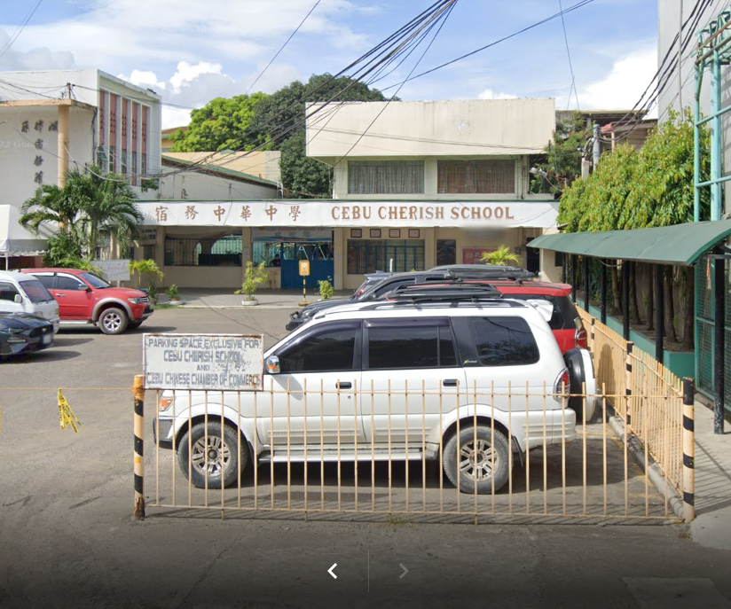
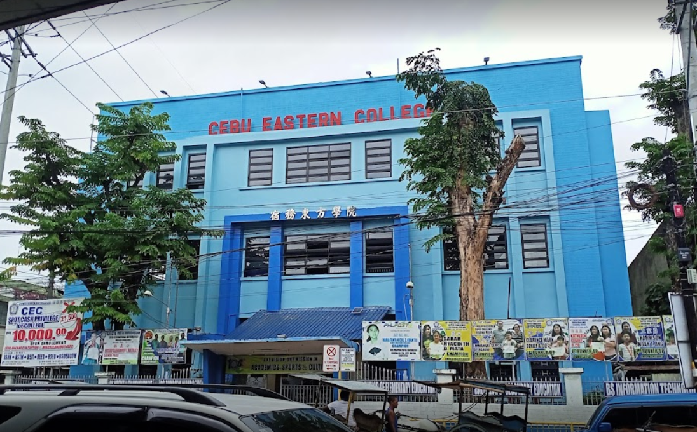
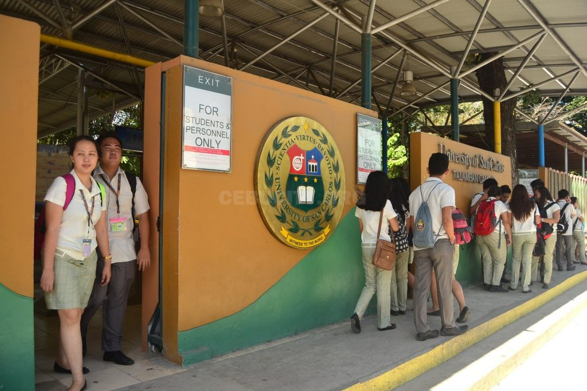

| Cebu Cherish School |  | |
| (S.Y. 2003 - 2011) | ||
| From nursery to 11th Grade, I studied in Cebu Cherish School. This was from 2003 to 2011. It a school that integrated chinese in their curriculum. When I was in my 5th grade, I had to transfer schools. |
|  | Cebu Eastern College | |
| (S.Y. 2011 - 2013) | ||
| In the middle of my fifth grade, I transfered to another school where chinese was integrated. I thought that my years of learning chinese while I was in Cherish would be a waste, so I transfered to Cebu Eastern College. |
| Cebu Eastern College | ||
| (S.Y. 2013 - 2017) | ||
| I continued studying in Cebu Eastern College when I was in junior highschool. I thought I would only have 4 years of highschool however, the K-12 curriculum was implemented. |
|  | University of San Carlos | |
| (S.Y. 2017 - 2019) | ||
| I proceeded to study the STEM track in senior highschool. The school I chose to proceed with this is the University of San Carlos as from what I had researched then, USC was one of the most prepared for the senior highschool curriculum. |
| University of San Carlos | For tertiary education, I opted to stay in USC and study Computer Engineering. Currently, I am a fourth year student. The building shown in the picture above is the building where the department of Computer Engineering is located. | |
| (S.Y. 2019 - Present) |